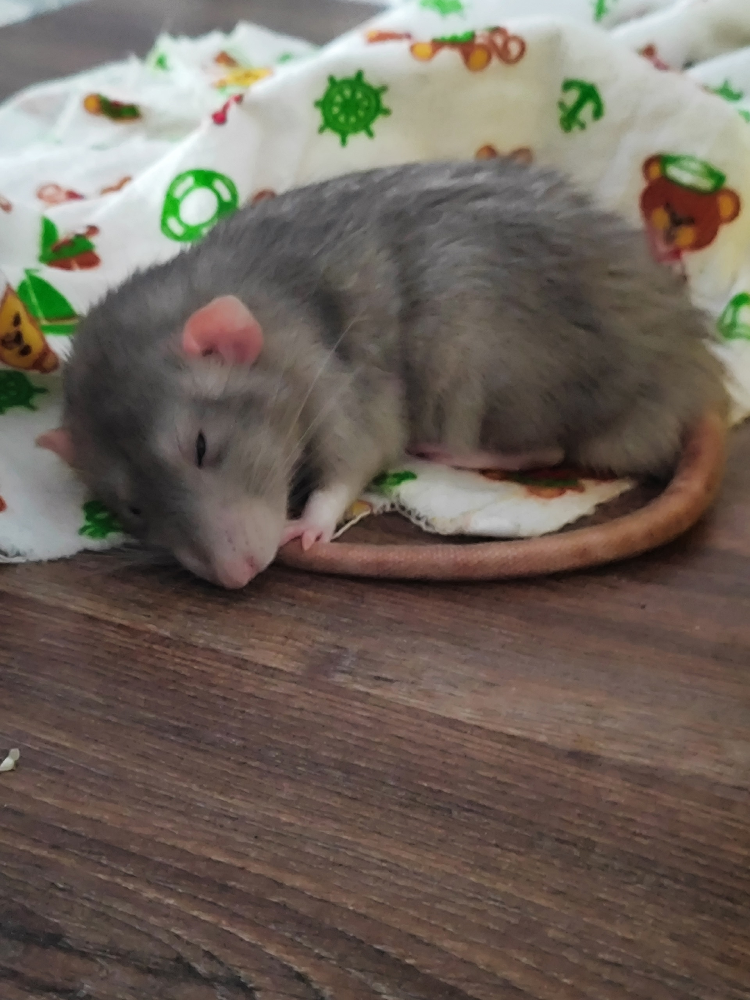

Обо мне
Родился в феврале 2025 года. Полгода жил в зоомагазине, после чего был обучен быть милым и ласковым. Но это не точно
Свое имя получил случайно, но обычно отзываюсь исключительно на "крыса", потому что вредный.
Проживаю в просторной жилой площади 30×60×50 см с двумя гамаками и домиком. Каждый вечер совершаю пробежки по дивану и инспектирую рабочий стол.
Недавно появился Федор, тоже вредный и слишком мелкий. Отбирает все внимание и ест вкусняшки вместо меня(
Достижения
- Чемпион по бегу на диване 2025
- Мастер спорта по прыжкам с поверхности
- Умею становиться блиночком
Полезная ссылка
Подробнее о домашних крысах можно узнать на сайте Википедия — Домашняя крыса